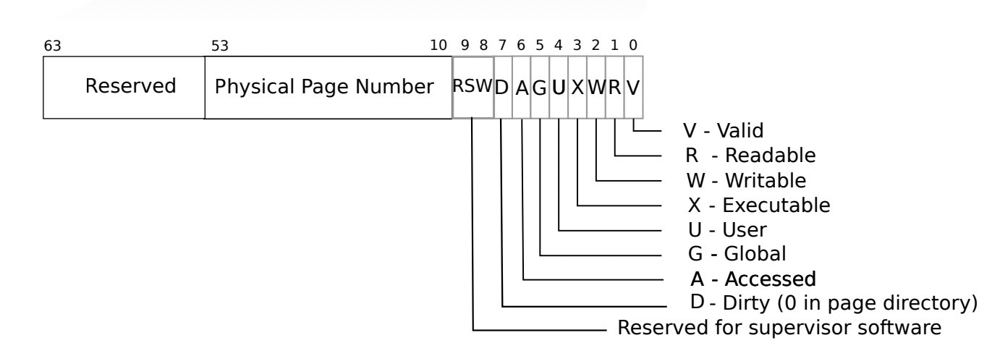
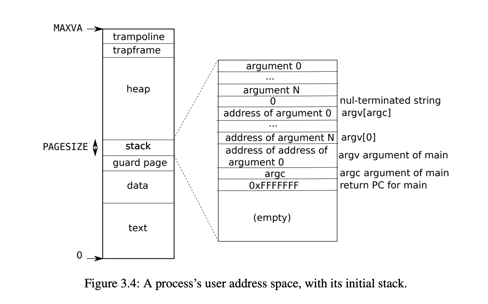

古人学问无遗力，少壮工夫老始成。
# Lab1: Xv6 and Unix utilities
这是 XV6-2021 系列第一个实验，主要是利用 xv6 系统调用实现一些小功能的简单实验。
# Boot xv6 (easy)
这部分的内容是让 xv6 虚拟机跑起来。在完成 qemu 和 riscv64-gcc 等虚拟机和基本编译器的安装后，便可以让 xv6 跑起来。
# sleep (easy)
这个实验的要点主要是调用哪些头文件，以及如何进行系统调用。
注意到，用户态可以使用的系统调用都在头文件 user.h 中声明，因此需要调用该头文件。也正是通过此方式调用头文件。
此外，另一个需要注意的是，借助 atoi() 实现命令行传入字符串到整数的转换。
这样，就容易得到 sleep 的代码。其代码如下：
#include "user.h" | |
int main(int argc, char *argv[]){ | |
if (argc != 2){ | |
printf("Parameter Error!"); | |
} | |
int n = atoi(argv[1]); | |
sleep(n); | |
printf("(nothing happens for a little while)"); | |
exit(0); | |
} |
此外，另一个问题是如何在 xv6 系统中编译该文件，这需要在 Makefile 的 UPROGS 中加入该文件的编译描述 ( $U/_sleep\ ). 这样就可以借助 make qemu 指令编译并运行 sleep.c 文件了。
# pingpong (easy)
pingpong 实验包括两个要点：
- 借助
fork实现进程复制 - 借助管道实现文件传输
fork 是一种基本的进程产生方式，其复制一个与父进程完全一样的子进程，父进程的返回值为 0 , 子进程的返回值为进程识别号 ( pid ).
于是，如果需要一个判别父进程和子进程的操作，则一般采用这种框架：
int pid = fork(); | |
if (pid == 0){ | |
// father process | |
} else if (pid > 0) { | |
// child process | |
} |
另一个需要学习的知识是管道 ( pipe )。注意到，一个管道是一个长度为 2 的数组。数组中的两个元素分别代表管道的读端和写端。其中，读端对应索引为 0 , 写端为 1 . 在进行管道传输时，需要保证读端与写端不发生时序混乱和读写冲突。这就需要借助 close() 函数实现读端和写端的对应关闭。
具体代码如下：
#include "kernel/stat.h" | |
#include "user/user.h" | |
int main(int argc, char *argv[]){ | |
int p1[2]; | |
int p2[2]; | |
pipe(p1); | |
pipe(p2); | |
int pid = fork(); | |
if(pid == 0){ | |
close(p1[1]); | |
close(p2[0]); | |
char son[2]; | |
read(p1[0],son,1); | |
close(p1[0]); | |
printf("%d: received ping\n",getpid()); | |
write(p2[1],"a",2); | |
close(p2[1]); | |
}else if(pid > 0){ | |
close(p1[0]); | |
close(p2[1]); | |
write(p1[1],"a",2); | |
close(p1[1]); | |
char father[2]; | |
read(p2[0],father,1); | |
printf("%d: received pong\n",getpid()); | |
close(p2[0]); | |
} | |
exit(0); | |
} |
# primes (moderate)/(hard)
primes 希望借助 pipe 筛选质数。其想法是：起初将范围内全体整数 (2 至 35) 传入首个进程。对传入第 个进程的全体整数，将其中最小的视作质数，并将其余整数中不能被该数整除的传递到下一个进程，直到不存在任何可以继续传输的数据。这显然就是朴素筛法的实现，因而原理上是正确的。在实际代码中，主要需要注意循环的终止逻辑。
具体代码如下：
#include "kernel/types.h" | |
#include "user.h" | |
#define READEND 0 | |
#define WRITEEND 1 | |
typedef int pid_t; | |
int main(int argc, char* argv){ | |
int fd[2]; | |
int nums[40]; | |
int index = 0; | |
// 枚举范围内全体整数 | |
for (int num=2;num<=35;num++){ | |
nums[index] = num; | |
index++; | |
} | |
while (index > 0){ | |
pipe(fd); | |
pid_t pid = fork(); | |
if (pid<0){ | |
printf("pid: %d, Fork error!\n", pid); | |
} | |
else if (pid>0) { | |
close(fd[READEND]); | |
index = 0; | |
while(nums[index]>0){ | |
write(fd[WRITEEND], &nums[index], sizeof(nums[index])); | |
index++; | |
} | |
close(fd[WRITEEND]); | |
wait((int *)0); | |
exit(0); | |
} | |
else{ | |
close(fd[WRITEEND]); | |
int prime = 0; | |
int tmp = 0; | |
index = 0; | |
while (read(fd[READEND], &tmp, sizeof(tmp))){ | |
if (index==0 && tmp>0){ | |
prime = tmp; | |
index++; | |
} | |
else if (tmp % prime != 0){ | |
nums[index-1] = tmp; | |
index++; | |
} | |
} | |
printf("prime %d\n", prime); | |
close(fd[WRITEEND]); | |
} | |
} | |
exit(0); | |
} |
# find (moderate)
find 实验要求实现一个简单的查找程序，其可以实现指定路径下含有特定名称的全部文件查找。
这是一个简单的实验，只需要对照 ls.c (列出目录下全部文件) 编写即可，其核心是实现目录遍历和类型判别。这部分内容在代码中容易找到答案。代码如下：
#include "kernel/types.h" | |
#include "kernel/stat.h" | |
#include "user/user.h" | |
#include "kernel/fs.h" | |
/* | |
* From ls.c | |
* Get the file name from a path | |
*/ | |
char* fmtname(char *path){ | |
static char buf[DIRSIZ+1]; | |
char *p; | |
// Find first character after last slash. | |
for(p=path+strlen(path); p >= path && *p != '/'; p--) | |
; | |
p++; | |
// Return blank-padded name. | |
if(strlen(p) >= DIRSIZ) | |
return p; | |
memmove(buf, p, strlen(p)); | |
buf[strlen(p)] = 0; | |
return buf; | |
} | |
void findCurrent(char *path, char *fileName){ | |
char buf[512], *p; | |
int fd; | |
struct dirent de; | |
struct stat st; | |
if((fd = open(path, 0)) < 0){ | |
fprintf(2, "cannot open %s\n", path); | |
exit(1); | |
} | |
if(fstat(fd, &st) < 0){ | |
fprintf(2, "cannot stat %s\n", path); | |
close(fd); | |
exit(1); | |
} | |
switch(st.type){ | |
case T_FILE: | |
if (strcmp(fmtname(path), fileName) == 0){ | |
printf("%s\n", path); | |
} | |
break; | |
case T_DIR: | |
if(strlen(path) + 1 + DIRSIZ + 1 > sizeof(buf)){ | |
printf("path too long\n"); | |
break; | |
} | |
// add '/' | |
strcpy(buf, path); | |
p = buf + strlen(buf); | |
*p++ = '/'; | |
while(read(fd, &de, sizeof(de)) == sizeof(de)){ | |
// inum == 0 means invalid directory entry | |
if (de.inum == 0) continue; | |
// add de.name to path | |
memmove(p, de.name, DIRSIZ); | |
p[DIRSIZ] = 0; | |
// don't find . and .. | |
if (!strcmp(de.name, ".") || !strcmp(de.name, "..")) continue; | |
// recursive call find | |
findCurrent(buf, fileName); | |
} | |
break; | |
} | |
close(fd); | |
} | |
int main(int argc, char *argv[]){ | |
if (argc != 3){ | |
printf("Parameter Error!"); | |
exit(1); | |
} | |
findCurrent(argv[1], argv[2]); | |
exit(0); | |
} |
# xargs (moderate)
xargs 是 Linux 中用来实现标准输入和文件输入的格式转换，以及输入参数的整合。其命令格式如下：
somecommand |xargs -item command |
在这个实验中，我们需要完成传入参数整合的功能。这个实验的关键依然是父进程和子进程的协调关系。即如何确定两进程的传入参数都已经完全。在这里，我们采用 wait 函数，实现父进程对子进程的等待。代码如下：
#include "kernel/types.h" | |
#include "kernel/param.h" | |
#include "user/user.h" | |
int main(int argc, char* argv[]){ | |
int fd[2]; | |
char *params[MAXARG]; | |
int i = 0; // pointer of param groups | |
int j = 1; // pointer in a param | |
int t; // temp variable | |
char s; | |
pipe(fd); | |
if (fork() == 0){ // child process | |
close(fd[1]); | |
params[0] = malloc(sizeof(char) * MAXARG); | |
params[1] = malloc(sizeof(char) * MAXARG); | |
while (read(fd[0], &t, 1) != 0){ | |
if (t != '\n') | |
params[j][i++] = t; | |
else { | |
params[j][i] = '\0'; | |
j++; | |
params[j] = malloc(sizeof(char) * MAXARG); | |
i = 0; | |
} | |
} | |
exec(argv[1], params); | |
for (i=0;i<=j;i++){ | |
free(params[i]); | |
} | |
close(fd[0]); | |
} | |
else { // parent process | |
close(fd[0]); | |
for (int i=2; i<argc; i++){ | |
write(fd[1], argv[i], strlen(argv[i])*sizeof(char)); | |
write(fd[1], "\n", 1); | |
} | |
while (read(0, &s, 1) != 0){ // fd=0 means Standard input | |
if (s==' '){ | |
write(fd[1], "\n", 1); | |
} | |
else { | |
write(fd[1], &s, 1); | |
} | |
} | |
write(fd[1], "\n", 1); | |
close(fd[1]); | |
wait(0); | |
} | |
exit(0); | |
} |
# Lab2: system calls
这仍然是 xv6 系列的入门实验。其旨在编写一些简单的系统调用，以更加熟悉 xv6 中的调用逻辑。课程页面为 Lab: system calls.
# System call tracing (moderate)
该实验的目的是实现一个追踪进程递归调用情况的系统调用，其输出如下所示：
$ trace 2147483647 grep hello README
4: syscall trace -> 0
4: syscall exec -> 3
4: syscall open -> 3
4: syscall read -> 1023
4: syscall read -> 966
4: syscall read -> 70
4: syscall read -> 0
4: syscall close -> 0
其中间自左向右依次是进程 pid , 系统调用名称以及系统调用返回码。因此，在实现过程中，我们需要考虑如何获取进程 pid , 以及系统调用的返回码。此外，本次实验是我们第一次对系统调用进行修改，我们需要熟悉系统调用方式，同时对内核文件作进一步了解。
该实验完成的主要步骤如下：
- 在
Makefile的UPROGS项中加入$U/_trace\. - 包括以下步骤：
- 在系统调用头文件
user/user.h中加入int trace(uint); - 在 Perl 脚本
user/usys.pl中加入entry("trace");作为动态链接的调用入口 (存根，stub). - 在
kernel/syscall.h中加入系统调用号#define SYS_trace 22.
- 在系统调用头文件
- 在
kernel/sysproc.c中加入函数sys_trace()的声明和调用索引。注意需要自定义数组char* syscall_name[24], 这是我们实现输出系统调用名称的方式。另外还需主义在定义时需要将数组范围开大一点。 - 在进程结构体
proc中加入一个标志字段trace_mask, 用来实现创建子进程的调用追踪。相应地，我们也需要在创建子进程中加入对该字段的初始化 (从父进程中复制)。其中，proc结构体的代码如下：对应的proc.h // Per-process statestruct proc {
...
char name[16]; // Process name (debugging)
uint trace_mask; // For sys_trace()
};
fork代码如下：前后过长的未修改部分已省略。proc.c intfork(void)
{...
// Copy user memory from parent to child.if(uvmcopy(p->pagetable, np->pagetable, p->sz) < 0){
freeproc(np);
release(&np->lock);
return -1;
}np->sz = p->sz;
// copy trace masknp -> trace_mask = p-> trace_mask;
// copy saved user registers.*(np->trapframe) = *(p->trapframe);
...
} - 在
sysproc.c中实现系统调用sys_trace, 该函数需要前面定义的传入参数trace_mask. 需要注意传入参数需要先检验合法性，然后进行操作。sysporc.c uint64
sys_trace(void)
{uint mask;if (argint(0, (int*)&mask) < 0){
return -1;
}struct proc *p = myproc();
p -> trace_mask |= mask;
return 0;
} - 修改
syscall.c中的syscall函数。该函数是进行一切系统调用的基础。在这里，我们通过p->trapframe->a7实现系统调用号的获取。同时根据trace_mask, 加入要求信息的输出。更改后的具体代码如下：syscall.c voidsyscall(void)
{int num;
struct proc *p = myproc();
num = p->trapframe->a7; // 获取系统调用号
if(num > 0 && num < NELEM(syscalls) && syscalls[num]) {
uint64 ret = syscalls[num]();
p->trapframe->a0 = ret;
if ((1 << num) & p->trace_mask) {
printf("%d: syscall %s -> %d\n", p->pid, syscall_name[num], ret);
} // 输出对应信息
} else {
printf("%d %s: unknown sys call %d\n",
p->pid, p->name, num);
p->trapframe->a0 = -1;
}} - 修改
user/trace.c中的main函数，加入trace系统调用和程序的退出调用exec.trace.c intmain(int argc, char *argv[])
{int i;
char *nargv[MAXARG];
if(argc < 3 || (argv[1][0] < '0' || argv[1][0] > '9')){
fprintf(2, "Usage: %s mask command\n", argv[0]);
exit(1);
}if (trace(atoi(argv[1])) < 0) {
fprintf(2, "%s: trace failed\n", argv[0]);
exit(1);
} // 根据传入参数要求加入对应的
for(i = 2; i < argc && i < MAXARG; i++){
nargv[i-2] = argv[i];
}exec(nargv[0], nargv);
exit(0);
} - 修改
Makefile.
# Sysinfo (moderate)
该实验希望实现一个系统调用接口 sysinfo . 该系统调用可以返回当前的空闲内存，以及活动进程的数量。该实验的一个目的是熟悉内核中的重要函数和重要结构体，例如进程分配和释放的函数 kalloc() , kfree() 等。
步骤如下：
- 在用户空间中构建一个头文件
sysinfo.h, 并在其中定义一个结构体struct sysinfo. 最后在user.h中声明它。该结构体如下：结构体中包含的信息就是当前的运行进程数目，以及空闲的内存大小。sysinfo.h struct sysinfo {
uint64 freemem; // amount of free memory (bytes)
uint64 nproc; // number of process
};
- 实现建立系统调用的基本修改，与
sys_trace的修改完全相同。包括：- 在
user.h中加入系统调用定义int sysinfo(struct sysinfo*) - 在
user/usys.pl中加入系统调用入口 - 在
kernel/syscall.h中定义系统调用号 - 在
kernel/syscall.c中加入系统调用的对应函数和调用索引
- 在
- 实现一个函数
freemem, 统计内存长度的大小。空闲内存大小由空闲链表长度与页大小相乘得到。此后在kernel/defs.h中声明它，以便在系统调用中使用该函数。在这里需要注意的是，为了避免多进程同时分配内存，造成内存长度大小出现错误的情况，我们需要在进行计数器修改时前后加入锁&kmem.lock.kalloc.c uint64 freemem(void) {
uint64 counter = 0;
struct run *r;
acquire(&kmem.lock);
r = kmem.freelist;
while(r) {
r = r->next;
++counter;
}release(&kmem.lock);
return counter * PGSIZE;
} - 在
kernel/proc.c中实现一个函数nproc, 用来实现活动进程的数目修改。我们希望在进程分配时调用该函数，从而使得其中的计数器可以正确反映进程的数目。注意到，在param.h中有关于最大进程数目的限制常量NPROC = 64, 我们在该函数中需要考虑这一点。同样地，我们也需要将其在defs.h中声明。其代码如下：proc.c uint64 nproc(void) {
uint64 counter = 0;
struct proc *p;
for (p = proc; p < &proc[NPROC]; p++){
acquire(&p->lock);
if(p->state != UNUSED)
++counter;
release(&p->lock);
}return counter;
} - 构建系统调用函数
sys_info, 其位于sysproc.c中。该调用只需要引用前面定义的两个函数。代码如下：sysproc.c uint64 sys_sysinfo(void) {
uint64 info;struct sysinfo kinfo;
struct proc *p = myproc();
if(argaddr(0, &info)<0)
return -1;
kinfo.freemem = freemem();
kinfo.nproc = nproc();
if(copyout(p->pagetable, info, (char*)&kinfo, sizeof(kinfo)) < 0)
return -1;
return 0;
} - 修改
Makefile, 将测试程序sysinfotest加入用户程序的编译名单。
这样，这个实验就完成了。
# Lab3: Page Table
Lab: page tables 是 6.s081 系列第三组实验，其目的是掌握页表的相关内容。
# 基础知识
在这个实验中，一个最基本的知识是 PTE 的定义和使用。在 xv6 中，其在 kernel/riscv.h 中进行定义。
在多级页表的页表项中，其开头是用于存放页表进入控制权限和信息的一些信息位，我们称这些位为 PTE (PageTable Entry). 其基本信息如下图所示：

# Speed up system calls
该实验要求构建一个共享域，以实现在用户态快速访问进程数据。
需要进行的操作包括：
在结构体
proc中加入一个系统调用域 (位于proc.h), 并在系统调用域中加入pid信息。根据实验指导书的提示，pid信息存储于memlayout.h中的struct usyscall中，我们只需要加入此结构体即可。proc.h // Per-process statestruct proc {
...
struct inode *cwd; // Current directory
struct usyscall *usyscall; //shared with kernel, 待添加项
char name[16]; // Process name (debugging)
};
仿照
trapframe信息构建一个用于共享信息的共享域。这部分对应的修改在proc.c中的allocproc和freeproc中。首先在
allocproc中加入对该共享页面的分配:proc.c static struct proc* allocproc(void) {
...
found:p->pid = allocpid();
p->state = USED;
// Allocate a trapframe page.if((p->trapframe = (struct trapframe *)kalloc()) == 0){
freeproc(p);
release(&p->lock);
return 0;
}// Allocate a shared page, 添加的部分if((p->usyscall = (struct usyscall *)kalloc()) == 0){
freeproc(p);
release(&p->lock);
return 0;
}...
}随后，在
freeproc中加入共享页面的释放:proc.c static void freeproc(struct proc *p) {
if(p->trapframe)
kfree((void*)p->trapframe);
p->trapframe = 0;
if(p->usyscall)
kfree((void*)p->usyscall);
p->usyscall = 0;
...
}在
kernel/proc.c的proc_pagetable函数中增加在内核中共享内存页的初始化，以及对共享内存块的页表初始化。proc.c pagetable_t proc_pagetable(struct proc *p) {
...
// map the trapframe just below TRAMPOLINE, for trampoline.S.if(mappages(pagetable, TRAPFRAME, PGSIZE,
(uint64)(p->trapframe), PTE_R | PTE_W) < 0){
uvmunmap(pagetable, TRAMPOLINE, 1, 0);
uvmfree(pagetable, 0);
return 0;
}// 添加的初始化部分if(mappages(pagetable, USYSCALL, PGSIZE,
(uint64)(p->usyscall), PTE_R | PTE_U) < 0){
uvmunmap(pagetable, TRAMPOLINE, 1, 0);
uvmunmap(pagetable, TRAPFRAME, 1, 0);
uvmfree(pagetable, 0);
return 0;
}return pagetable;
}在
proc.c中的proc_freepagetable中加入USYSCALL的释放。proc.c void proc_freepagetable(pagetable_t pagetable, uint64 sz) {
uvmunmap(pagetable, TRAMPOLINE, 1, 0);
uvmunmap(pagetable, TRAPFRAME, 1, 0);
uvmunmap(pagetable, USYSCALL, 1, 0);
uvmfree(pagetable, sz);
}
# Print a page table
构建一个新函数 vmprint() ，递归打印其下的页表结构，然后将定义的 vmprint 加入到 defs.h 中。
其关键步骤如下：
- 在
kernel/vm.c中实现printwalk()函数，该函数仿照freewalk()实现对页表的递归访问。随后在defs.h中声明该函数，以便在exec中调用它。代码如下：另一个需要注意的是，如何获知页表是否有效，以及其是否存在下一级页表。采用vm.c // Print a page table, like freewalkvoid vmprint(pagetable_t pagetable) {
printf("page table %p\n", pagetable);
printwalk(pagetable, 1);
}void printwalk(pagetable_t pagetable, int depth) {
for(int i = 0; i < 512; i++){
pte_t pte = pagetable[i];
if(pte & PTE_V){
for(int j=0; j<depth-1; j++) printf(".. ");
printf("..%d: pte %p ", i, pte);
uint64 child = PTE2PA(pte);
printf("pa %p\n", child);
if((pte & (PTE_R|PTE_W|PTE_X)) == 0){
printwalk((pagetable_t) child, depth+1);
}}}}riscv.h中定义的页表标志位PTE_...实现。 - 修改
exec(), 在return argc之前插入exec.c if (p->pid==1) vmprint(p->pagetable);
# Detecting which pages have been accessed
需要完成一个系统调用 sys_pgaccess() , 以获取哪些页表是被访问过的。该程序在 sysproc.c 中实现。
对于被访问过的页表的数据存储，采用位掩码 (bitmask) 的方式进行。
关键的调用程序包括
walk(): 返回页面对应的页表项的地址copyout(): 将内核区数据复制到内存区
该实验需要分如下步骤完成：
- 根据实验指导书的提示，我们需要新加入一个页表控制位
PTE_A, 用来实现页面访问的标志。根据前面的介绍，我们选择第 6 位定义PTE_A.riscv.h #define PTE_A (1L << 6) // 1 -> have been accessed - 这样，我们需要借助定义的
PTE_A, 实现系统调用sys_pgaccess. 当然了，我们也需要像之前一样定义系统调用号和调用索引等操作。需要注意的是，当释放页表后，对应的sysproc.c int sys_pgaccess(void) {
// lab pgtbl: your code here.int len; // num of page to detect
uint64 base,abits; // begin address & address to write
if(argaddr(0,&base) < 0 || argint(1,&len) < 0 || argaddr(2, &abits) < 0)
return -1;
if(len > 32 || len < 0)
return -1;
struct proc* p = myproc();
uint64 mask = 0;
for(int i = 0 ; i < len ; ++i) {
uint64 pg = base + i * PGSIZE;
pte_t* pte = walk(p->pagetable, pg ,0);
if(*pte & PTE_A) {
mask |= (1<<i);
*pte = (*pte) & (~PTE_A); //clear PTE_A
}}copyout(p->pagetable, abits, (char*)&mask,sizeof(mask));
return 0;
}PTE_A标志位也需要清零。
这样这个实验就完成了。
# Lab4: traps
这部分内容是关于陷阱指令的应用 —— 如何通过陷阱指令实现系统调用。
# Backtrace
其目的是实现一个可供调试使用的调用列表。该函数是位于 printf.c 中的 backtrace() .
首先，当前函数的栈指针在寄存器 s0 中，需要通过 riscv.h 中的 r_fp() 实现。
此外，还需要用到的包括 riscv.h 中的宏 PGROUNDUP(sz) 找到页表开头。RISCV 是大端存储的，高字节数据在低地址。
其具体实现如下：
void backtrace(void) { | |
printf("backtrace:\n"); | |
uint64 fp = r_fp(); | |
uint64 base = PGROUNDUP(fp); | |
while (fp < base){ | |
printf("%p\n", *((uint64*)(fp-8))); | |
fp = *((uint64*)(fp - 16)); | |
} | |
} |
# alarm
目标是实现一个新的系统调用 sigalarm(interval, handler) , 实现打点计时按照固定的频率中断播报 alarm! . 其中 interval 表示计时周期的点间隔， handler 是被中断的进程对应函数指针。
该实验的测试验证文件是 user.alarmtest.c . 其中包括三个测试：
- Test0: 只要求成功调用并打印
alarm!. - Test1&2: 需要保存中断上下文，同时防止两次调用 alarm 形成冲突
# 在进程结构体中加入对应信息域
首先需要在进程结构 struct proc 中加入对应的域 ( proc.h )：
struct proc { | |
... | |
int interval; // Alarm interval (ticks) | |
uint64 handler; // Pointer to handler | |
int ticks; // Number of ticks that have passed since the last call | |
struct trapframe alarm_trapframe; // Backup the trapframe to restore the register at the time of the interrupt; | |
int enable_handler; // Prevent re-entrant calls to the handler | |
... | |
} |
其中， isentry 是一个表示是否进入 handler 的标志位，用来防止重复调用。
# 进程分配和释放的修改
一个需要注意的地方是，在中断前后需要保护 / 恢复现场，即各寄存器的值。这是关于 Test1/2 的内容。这部分需要在 proc.c 中的 allocproc() 和 freeproc() 中实现。
在 allocproc() 中，对 struct proc 中新加入的域进行初始化，并仿照 trapframe 的创建，进行 alarm_trapframe 的分配。代码如下：
static struct proc* allocproc(void) { | |
... | |
found: | |
p->pid = allocpid(); | |
p->state = USED; | |
p->ticks = 0; | |
p->interval = 0; | |
p->isentry = 0; | |
p->handler = 0; | |
// Allocate a trapframe page to save signal registers. | |
if((p->trapframe = (struct trapframe *)kalloc()) == 0){ | |
freeproc(p); | |
release(&p->lock); | |
return 0; | |
} | |
... | |
} |
在 freeproc() 中，类似加入 alarm_trapframe 的释放，同时加入活动进程 p 的信息初始化：
static void freeproc(struct proc *p) { | |
if(p->trapframe) | |
kfree((void*)p->trapframe); | |
p->trapframe = 0; | |
if(p->pagetable) | |
proc_freepagetable(p->pagetable, p->sz); | |
p->pagetable = 0; | |
p->sz = 0; | |
p->pid = 0; | |
p->parent = 0; | |
p->name[0] = 0; | |
p->chan = 0; | |
p->killed = 0; | |
p->xstate = 0; | |
p->state = UNUSED; | |
p->interval = 0; | |
p->handler = 0; | |
p->ticks = 0; | |
p->enable_handler = 0; | |
} |
# 加入对应的系统调用
在这之后，在 proc.c 中加入对应的系统调用。包括
// alarm | |
uint64 sys_sigalarm(void) { | |
int interval; | |
uint64 handler; | |
struct proc* p = myproc(); | |
if(argint(0, &interval) < 0) | |
return -1; | |
if(argaddr(1, &handler) < 0) | |
return -1; | |
p->interval = interval; | |
p->handler = handler; | |
p->enable_handler = 1; | |
return 0; | |
} | |
// return | |
uint64 sys_sigreturn(void) { | |
struct proc* p = myproc(); | |
p->enable_handler = 1; | |
*(p->trapframe) = p->alarm_trapframe; | |
return 0; | |
} |
# 系统调用声明等相关配置
对应地，也要向之前一样在 user.h 中加入系统调用的声明：
... | |
//system calls | |
int sigalarm(int ticks, void (*handler)()); | |
int sigreturn(void); | |
... |
在 Perl 脚本中加入对应的调用入口：
... | |
entry("sigalarm"); | |
entry("sigreturn"); | |
... |
在 syscall.h 中加入对应的系统调用号：
... | |
#define SYS_sigalarm 22 | |
#define SYS_sigreturn 23 | |
... |
在 syscall.c 中也加入对应的调用入口和函数声明。
... | |
extern uint64 sys_sigalarm(void); | |
extern uint64 sys_sigreturn(void); | |
... | |
[SYS_sigalarm] sys_sigalarm, | |
[SYS_sigreturn] sys_sigreturn, | |
... |
最后，更改 trap.c 中的 usertrap() , 在标记有 give up the CPU if this is a timer interrupt. 注释下加入时钟中断时引入 alarm 的操作：
void usertrap(void) { | |
... | |
// give up the CPU if this is a timer interrupt. | |
if(which_dev == 2){ | |
if((++p->ticks == p->interval) && p->enable_handler){ | |
p->enable_handler = 0; | |
p->ticks = 0; | |
p->alarm_trapframe = *(p->trapframe); | |
// No need to call mannually, just let pc point at which the handler point at | |
//(*(void(*)())(p->handler))(); | |
p->trapframe->epc = p->handler; | |
} | |
yield(); | |
} | |
usertrapret(); | |
} |
此前曾多次调试，但 test2 总是跑不过去，最后发现是程序的进入标记没没有清空导致的。
# Lab5: Copy-on-Write Fork for xv6
# 概述
folk() 调用将父进程中用户空间内全体内存全部复制到子进程，这会带来极大的浪费并降低进程执行效率。本实验的目的是实现一种懒惰的 folk 策略，使得仅需要写入内存页时才开始复制内存页。
根据实验指导中给出的提示，我们先对实验所需的操作进行一个简单的梳理。
实验的目标是对 folk 进行优化，于是需要将 folk 过程中复制的页面进行懒惰标记。于是实验的第一步是加入一个页面的懒惰标记，并在页面的操作函数中进行匹配。这就是下述的加入 PTE_COW 标志位的操作。
其次，要想明确 COW 页面何时可以释放，就需要加入一个对应的标记机制。此时，我们考虑引入计数器。当存在进程对该页面的调用时，就使得计数器的值 + 1，当取消调用时则 - 1. 由此得到不存在进程对该页面的调用时，就释放该页面并清空对应的页表项。这部分所操作需要加入计数器的数据结构，在实验中实际以 kalloc.c 中定义结构体 struct ref 表示。同时，需要关注 kinit , kalloc , kfree 等函数，并进行针对性的修改。
第三，考虑对 COW 页面本身的操作。这部分包括两个基本操作，一个是判断页面是否为所谓 COW 页面，另一个是进行 COW 页面的分配。
最后，需要修改系统中的页面操作函数，包括 usertrap() 和 copyout() .
# Implement copy-on write(hard)
这是一个相当麻烦的实验，尽管其机制不十分复杂，但非常考验代码修改的细致程度。
# uvmcopy 的修改
# 增加 pte 标志位
首先在进程 pte 中加入一个标志位 PTE_COW , 用来表示一个界面是否为 COW 页面，即正在被 folk 的父进程和子进程同时使用的页面。修改的内容在 riscv.h 中。
... | |
#define PTE_V (1L << 0) // valid | |
#define PTE_R (1L << 1) | |
#define PTE_W (1L << 2) | |
#define PTE_X (1L << 3) | |
#define PTE_U (1L << 4) // 1 -> user can access | |
#define PTE_COW (1L << 8) | |
... |
# 修改 uvmcopy ()
修改 uvmcopy() 的目的是将父级物理页映射到子级，而不是分配新页。同时，不再采用 PTE_W 标志位。因此，需要将页分配地址 char* mem 移除，同时移除其所在的 kalloc() 和 memove() 语句。
其修改后的结果如下：
int uvmcopy(pagetable_t old, pagetable_t new, uint64 sz) { | |
pte_t *pte; | |
uint64 pa, i; | |
uint flags; | |
for(i = 0; i < sz; i += PGSIZE){ | |
if((pte = walk(old, i, 0)) == 0) | |
panic("uvmcopy: pte should exist"); | |
if((*pte & PTE_V) == 0) | |
panic("uvmcopy: page not present"); | |
pa = PTE2PA(*pte); | |
flags = PTE_FLAGS(*pte); | |
// add a COW label for the writable page | |
if(flags & PTE_W) { | |
flags = (flags | PTE_F) & ~PTE_W; | |
*pte = PA2PTE(pa) | flags; | |
} | |
if(mappages(new, i, PGSIZE, pa, flags) != 0) { | |
uvmunmap(new, 0, i / PGSIZE, 1); | |
return -1; | |
} | |
} | |
return 0; | |
} |
# 增加引用计数
当我们需要释放页面时，我们需要保证父进程和子进程都不再使用该页面。因此我们需要增加一个计数器，用来获取页面的利用情况。
# 加入计数器
于是，我们先考虑在 kalloc.c 中增加一个结构体 struct ref ，用来表示引用情况。结构体定义如下：
struct { | |
struct spinlock lock; | |
int cnt[PHYSTOP/PGSIZE]; | |
} ref; |
引入锁的目的是防止多个进程对计数器同时修改引发错误。 PHYSTOP/PGSIZE 显然表示的是一个页表中的页表项数目。
# 加入计数器相关调用函数
我们需要在 kalloc.c 中增加一个用来增加计数器 struct ref 的函数。我们定义为 int addref(void* pa) , 其具体如下：
int | |
addref(void* pa) | |
{ | |
if((uint64)pa%PGSIZE!=0 || (char*)pa < end || (uint64)pa > PHYSTOP) return -1; | |
acquire(&ref.lock); | |
++ref.cnt[(uint64)pa/PGSIZE]; | |
release(&ref.lock); | |
return 0; | |
} |
还需要在 kalloc.c 中增加一个用来获取计数器值的函数如下：
// return counter | |
int getcnt(void* pa) { | |
return ref.cnt[(uint64)pa / PGSIZE]; | |
} |
最后，不要忘记在 defs.h 中加入 addref 和 getcnt 的声明。
# 将计数器机制加入原有函数
这部分工作影响的函数包括 vm.c 中的 uvmcopy , kalloc.c 中的 kinit , kalloc 和 kfree .
# uvmcopy 再次修改
即在 uvmcopy() 中加入 addref() , 这是对前述修改的补充。
int uvmcopy(pagetable_t old, pagetable_t new, uint64 sz) { | |
pte_t *pte; | |
uint64 pa, i; | |
uint flags; | |
for(i = 0; i < sz; i += PGSIZE){ | |
if((pte = walk(old, i, 0)) == 0) | |
panic("uvmcopy: pte should exist"); | |
if((*pte & PTE_V) == 0) | |
panic("uvmcopy: page not present"); | |
pa = PTE2PA(*pte); | |
flags = PTE_FLAGS(*pte); | |
// 仅对可写页面设置 COW 标记 | |
if(flags & PTE_W) { | |
// 禁用写并设置 COW Fork 标记 | |
flags = (flags | PTE_F) & ~PTE_W; | |
*pte = PA2PTE(pa) | flags; | |
} | |
if(mappages(new, i, PGSIZE, pa, flags) != 0) { | |
uvmunmap(new, 0, i / PGSIZE, 1); | |
return -1; | |
} | |
// add ref | |
if(addref((char*)pa) != 0) return -1; | |
} | |
return 0; | |
} |
# kinit 中初始化锁
其次，需要在 kinit 中加入关于结构体 ref 的自旋锁的初始化：
void | |
kinit() | |
{ | |
initlock(&kmem.lock, "kmem"); | |
initlock(&ref.lock, "kref"); | |
freerange(end, (void*)PHYSTOP); | |
} |
# 更改 kfree 中的页面释放机制
此外，需要在 kfree 中更改页面释放机制，使得计数器为 0 时进行页面释放。关键是添加了判断 --ref.cnt[(uint64)pa/PGSIZE] == 0 的情况。
void | |
kfree(void *pa) | |
{ | |
struct run *r; | |
if(((uint64)pa % PGSIZE) != 0 || (char*)pa < end || (uint64)pa >= PHYSTOP) | |
panic("kfree"); | |
acquire(&ref.lock); | |
if(--ref.cnt[(uint64)pa / PGSIZE] == 0) { | |
release(&ref.lock); | |
// Fill with junk to catch dangling refs. | |
memset(pa, 1, PGSIZE); | |
r = (struct run*)pa; | |
// calculate the index | |
// uint64 index = ((uint64)pa - (uint64)end) >> 12; | |
acquire(&kmem.lock); | |
r->next = kmem.freelist; | |
kmem.freelist = r; | |
release(&kmem.lock); | |
// initialize | |
// kmem.ref_count[index] = 0; | |
} else { | |
release(&ref.lock); | |
} | |
} |
# 加入引用计数的初始化
引用计数的初始化我在两部分都加入了，防止出现未初始化的问题。
首先在 kalloc.c 的 freerange 中，对全体页表项进行计数器的初始化，代码如下：
void | |
freerange(void *pa_start, void *pa_end) | |
{ | |
char *p; | |
p = (char*)PGROUNDUP((uint64)pa_start); | |
for(; p + PGSIZE <= (char*)pa_end; p += PGSIZE){ | |
ref.cnt[(uint64)p / PGSIZE] = 1; | |
kfree(p); | |
} | |
} |
其次，在分配页的函数 kalloc 中加入初始化，这是对某个正在运行的进程所对应的单一页表进行初始化。
void * | |
kalloc(void) | |
{ | |
struct run *r; | |
acquire(&kmem.lock); | |
r = kmem.freelist; | |
if(r) { | |
kmem.freelist = r->next; | |
acquire(&ref.lock); | |
ref.cnt[(uint64)r / PGSIZE] = 1; // 将引用计数初始化为 1 | |
release(&ref.lock); | |
} | |
release(&kmem.lock); | |
if(r) | |
memset((char*)r, 5, PGSIZE); // fill with junk | |
return (void*)r; | |
} |
# COW 页面的判断和分配
# COW 页面的判断
我们在 kalloc.c 中定义 COW 页面的判断函数 cowpage , 当这个页面需要进行 COW folk 时，返回 0 , 否则返回 -1 .
int cowpage(pagetable_t pagetable, uint64 va) { | |
if (va > MAXVA) return -1; | |
pte_t *pte = walk(pagetable, va, 0); | |
if(pte == 0) return -1; // page is not exist | |
if((*pte & PTE_V) == 0) return -1; // page is invalid | |
return ((*pte & PTE_COW) ? 0 : -1); | |
} |
# COW 页面的分配
在 kalloc.c 中定义 COW 页面的分配函数 cow_alloc , 用来给 COW page 分配物理页面。
// alloc page to cow page | |
void* cow_alloc(pagetable_t pagetable, uint64 va) { | |
if(va % PGSIZE != 0) return 0; | |
uint64 pa = walkaddr(pagetable, va); | |
if(pa == 0) return 0; | |
pte_t *pte = walk(pagetable, va, 0); | |
if(getcnt((char*)pa) == 1) { | |
*pte |= PTE_W; | |
*pte &= ~PTE_COW; | |
return (void*) pa; | |
} else { | |
char *mem; | |
if ((mem=kalloc()) == 0) return 0; | |
*pte &= ~PTE_V; | |
memmove(mem, (char*)pa, PGSIZE); | |
if(mappages(pagetable, va, PGSIZE, (uint64)mem, (PTE_FLAGS(*pte) | PTE_W) & (~PTE_COW)) != 0) { | |
kfree(mem); | |
*pte |= PTE_V; | |
// *pte &= ~PTE_V; | |
return 0; | |
} | |
kfree((char*)PGROUNDDOWN(pa)); | |
return mem; | |
} | |
} |
这里关于 PTE_V 等 pte 有效位的逻辑一定要谨慎。这是我在实验中检查到的最后一个 bug.
在完成以上函数的定义后，将其加入到头文件 defs.h 中。
# 修改 usertrap () 以识别页面错误
这一步的目的是：当识别到 COW 页面上发生错误时，进入内核态，采用 kalloc() 分配新页面，然后将旧页面复制到新页面中并设置 PTE_W .
void | |
usertrap(void) | |
{ | |
int which_dev = 0; | |
if((r_sstatus() & SSTATUS_SPP) != 0) | |
panic("usertrap: not from user mode"); | |
// send interrupts and exceptions to kerneltrap(), | |
// since we're now in the kernel. | |
w_stvec((uint64)kernelvec); | |
struct proc *p = myproc(); | |
// save user program counter. | |
p->trapframe->epc = r_sepc(); | |
if(r_scause() == 8){ | |
// system call | |
if(p->killed) | |
exit(-1); | |
// sepc points to the ecall instruction, | |
// but we want to return to the next instruction. | |
p->trapframe->epc += 4; | |
// an interrupt will change sstatus &c registers, | |
// so don't enable until done with those registers. | |
intr_on(); | |
syscall(); | |
} else if (r_scause() == 13||r_scause() == 15){ | |
// 15 is *load page fault*, we need to create a new pagetable. 13 is also needed. (but do not know why...) | |
uint64 fault_addr = r_stval(); | |
if (fault_addr >= p->sz || cowpage(p->pagetable,fault_addr) != 0 || cow_alloc(p->pagetable, PGROUNDDOWN(fault_addr)) == 0) { | |
p->killed = 1; | |
} | |
} else if((which_dev = devintr()) != 0){ | |
// ok | |
} else { | |
printf("usertrap(): unexpected scause %p pid=%d\n", r_scause(), p->pid); | |
printf(" sepc=%p stval=%p\n", r_sepc(), r_stval()); | |
p->killed = 1; | |
} | |
if(p->killed) | |
exit(-1); | |
// give up the CPU if this is a timer interrupt. | |
if(which_dev == 2) | |
yield(); | |
usertrapret(); | |
} |
这里尤其需要关注 else if (r_scause() == 13||r_scause() == 15) 这个入口的控制条件。
# 修改 copyout
copyout 是将页面从内核态拷贝到用户态的函数，可能涉及 COW 页面的修改，因此需要加入针对 COW 页面的判断。相反地，对于从用户态拷贝到内核态的 copyin , 则不需要进行修改。
// Copy from kernel to user. | |
// Copy len bytes from src to virtual address dstva in a given page table. | |
// Return 0 on success, -1 on error. | |
int | |
copyout(pagetable_t pagetable, uint64 dstva, char *src, uint64 len) | |
{ | |
uint64 n, va0, pa0; | |
// pte_t *pte; | |
while(len > 0){ | |
va0 = PGROUNDDOWN(dstva); | |
pa0 = walkaddr(pagetable, va0); | |
if(cowpage(pagetable, va0) == 0) { | |
pa0 = (uint64)cow_alloc(pagetable, va0); | |
} | |
if(pa0 == 0) | |
return -1; | |
n = PGSIZE - (dstva - va0); | |
if(n > len) | |
n = len; | |
memmove((void *)(pa0 + (dstva - va0)), src, n); | |
len -= n; | |
src += n; | |
dstva = va0 + PGSIZE; | |
} | |
return 0; | |
} |
这就是 Lab5: Copy-on-Write Folk for xv6 的全部内容。
# Lab6: Multithreading
这是一个关于多线程的简单实验。其包括用户级线程切换、线程使用和屏障设置三个部分。
# Uthread: switching between threads (moderate)
在该问题中，xv6 将同时启动三个线程。问题要求是实现三个进程的并行执行。
根据实验指导中给出的 hints, 该问题需要研究的代码段位于 user/uthread.c 以及 user/thread_switch.S . 下面是具体的解决方案：
# 添加上下文环境存储域
在 uthread.c 中的 struct thread 中，加入一个长度为 14 的数组，用来保存线程中断的寄存器数值。在 xv6 book7.2 小节: Code: Context switching 中，记载了上下文结构包含的寄存器包括
struct context { | |
uint64 ra; | |
uint64 sp; | |
// callee-saved | |
uint64 s0; | |
uint64 s1; | |
uint64 s2; | |
uint64 s3; | |
uint64 s4; | |
uint64 s5; | |
uint64 s6; | |
uint64 s7; | |
uint64 s8; | |
uint64 s9; | |
uint64 s10; | |
uint64 s11; | |
}; |
因此需要开大小为 14 的数组。且根据此，我们在数组 context 中，默认的前两位分别为返回地址寄存器 RA (return address) 和栈指针寄存器 SP (stack pointer). 于是将结构体作如下修改：
struct thread { | |
char stack[STACK_SIZE]; /* the thread's stack */ | |
int state; /* FREE, RUNNING, RUNNABLE */ | |
uint64 context[14]; /* save the context */ | |
}; |
根据对保存上下文内容的寄存器的相关理解，需要在 thread_schedule 和 thread_create 中加入的部分也一目了然了。在 thread_schedule 中，待填部分前已经选择好了转换前后的线程，因此只需要在待填部分加入一个传递上下文的函数即可。在 thread_create 中，需要加入对两个关键寄存器的操作，分别是储存返回地址的 ra = context[0] 和储存栈指针位置的 sp = context[1] .
void | |
thread_schedule(void) | |
{ | |
struct thread *t, *next_thread; | |
/* Find another runnable thread. */ | |
next_thread = 0; | |
t = current_thread + 1; | |
for(int i = 0; i < MAX_THREAD; i++){ | |
if(t >= all_thread + MAX_THREAD) | |
t = all_thread; | |
if(t->state == RUNNABLE) { | |
next_thread = t; | |
break; | |
} | |
t = t + 1; | |
} | |
if (next_thread == 0) { | |
printf("thread_schedule: no runnable threads\n"); | |
exit(-1); | |
} | |
if (current_thread != next_thread) { /* switch threads? */ | |
next_thread->state = RUNNING; | |
t = current_thread; | |
current_thread = next_thread; | |
/* YOUR CODE HERE | |
* Invoke thread_switch to switch from t to next_thread: | |
* thread_switch(??, ??); | |
*/ | |
thread_switch((uint64)t->context, (uint64)next_thread->context); | |
} else | |
next_thread = 0; | |
} | |
void | |
thread_create(void (*func)()) | |
{ | |
struct thread *t; | |
for (t = all_thread; t < all_thread + MAX_THREAD; t++) { | |
if (t->state == FREE) break; | |
} | |
t->state = RUNNABLE; | |
// YOUR CODE HERE | |
t->context[0] = (uint64)func; | |
t->context[1] = (uint64)t->stack+STACK_SIZE; | |
} |
# Using threads (moderate)
该部分希望实现一个防止冲突多线程哈希表。需要关注 put 和 insert 函数，实现哈希插入的原子化。
对应代码如下：
static void insert(int key, int value, struct entry **p, struct entry *n) { | |
struct entry *e = malloc(sizeof(struct entry)); | |
e->key = key; | |
e->value = value; | |
pthread_mutex_init(&e->lock,NULL); | |
e->next = n; | |
*p = e; | |
} | |
static void put(int key, int value) { | |
int i = key % NBUCKET; | |
// is the key already present? | |
struct entry *e = 0; | |
for (e = table[i]; e != 0; e = e->next) { | |
if (e->key == key) | |
break; | |
} | |
if(e){ | |
// update the existing key. | |
pthread_mutex_lock(&e->lock); | |
e->value = value; | |
pthread_mutex_unlock(&e->lock); | |
} else { | |
// the new is new. | |
pthread_mutex_lock(&hashlock); | |
insert(key, value, &table[i], table[i]); | |
pthread_mutex_unlock(&hashlock); | |
} | |
} |
# Barrier(moderate)
该部分需要实现一个屏障，即在某点处等待全部进程完成。只需要调用实验指导书中给出的 pthread 原语即可，代码实现于 barrier.c 中的 barrier 中：
static void | |
barrier() | |
{ | |
// YOUR CODE HERE | |
// | |
// Block until all threads have called barrier() and | |
// then increment bstate.round. | |
// | |
pthread_mutex_lock(&bstate.barrier_mutex); | |
if(bstate.round!=round) | |
pthread_cond_wait(&round_lock,&bstate.barrier_mutex); | |
bstate.nthread++; | |
if(bstate.nthread!=nthread) | |
pthread_cond_wait(&bstate.barrier_cond,&bstate.barrier_mutex); | |
else { | |
pthread_cond_broadcast(&bstate.barrier_cond); | |
bstate.round++; | |
} | |
bstate.nthread--; | |
if(bstate.nthread==0) { | |
round++; | |
pthread_cond_broadcast(&round_lock); | |
} | |
pthread_mutex_unlock(&bstate.barrier_mutex); | |
} |
# Lab7: networking
这部分实验的目的是实现 e1000_transmit 和 e1000_recv 两个函数，用来实现数据的发送和接收。要想真正弄懂该实验，需要阅读 E1000 开发手册。但如果仅想完成该实验，只需要按实验指导书中的操作进行完成即可。实验指导书中给出的 hints 已经近乎是伪代码级别，按照此完成即可。
如果简单谈一谈该实验，那么其核心操作系统对网络传输提供的服务实现方式。此外一个需要注意的点是包传输和接收中锁的使用。
下面是需要实现的代码：
int e1000_transmit(struct mbuf *m) { | |
// | |
// Your code here. | |
// ... | |
acquire(&e1000_lock); | |
// get next tx_ring index | |
uint32 tx_index = regs[E1000_TDT]; | |
//check if overflowing | |
if ((tx_ring[tx_index].status & E1000_TXD_STAT_DD) == 0) { | |
release(&e1000_lock); | |
return -1; | |
} | |
// free the last mbuf | |
if (tx_mbufs[tx_index]) | |
mbuffree(tx_mbufs[tx_index]); | |
// set descriptor | |
tx_mbufs[tx_index] = m; | |
tx_ring[tx_index].addr = (uint64)m->head; | |
tx_ring[tx_index].length = m->len; | |
tx_ring[tx_index].cmd = E1000_TXD_CMD_EOP | E1000_TXD_CMD_RS; | |
// ring position update | |
regs[E1000_TDT] = (tx_index + 1) % TX_RING_SIZE; | |
release(&e1000_lock); | |
return 0; | |
} | |
static void | |
e1000_recv(void) | |
{ | |
// | |
// Your code here. | |
// ... | |
while(1) { | |
// get next index | |
uint32 rx_index = (regs[E1000_RDT] + 1) % RX_RING_SIZE; | |
// check status | |
if ((rx_ring[rx_index].status & E1000_RXD_STAT_DD) == 0) | |
return ; | |
rx_mbufs[rx_index]->len = rx_ring[rx_index].length; | |
net_rx(rx_mbufs[rx_index]); | |
rx_mbufs[rx_index] = mbufalloc(0); | |
rx_ring[rx_index].addr = (uint64)rx_mbufs[rx_index]->head; | |
rx_ring[rx_index].status = 0; | |
regs[E1000_RDT] = rx_index; | |
} | |
} |
# Lab8: locks
在操作系统中，锁的作用有利有弊。一方面，其通过强制同步实现了许多代码逻辑的正常性；另一方面，其也因为强制同步降低了并行性，并使计算机系统的效率有所降低。在多核计算机中，由于锁争用 (lock contension) 的存在，锁降低系统效率的情况尤甚。
本次实验的主要目标是重新设计锁，以提高计算机系统在多核下的并行性，从而提高计算机系统效率。
# Memory allocator (moderate)
Your job is to implement per-CPU freelists, and stealing when a CPU's free list is empty.
根据实验指导网页的提示，我们应该对每个 CPU 独自实现空闲列表 (freelist), 并在 CPU 空闲列表为空时进行窃取。
# 更改空闲列表对应的结构体
将原本的 struct kmem 实例转化为一个结构体，然后构建 CPU 数目个 kmem 实例。
struct kmem{ | |
struct spinlock lock; | |
struct run *freelist; | |
}; | |
struct kmem kmems[NCPU]; |
# 更改对 kmem 进行的相应维护
这部分内容包括初始化 ( kinit )、分配 ( kalloc ) 和释放 ( kfree ) 时的维护。
# kinit 的修改
在 kinit 中，需要对各 CPU 的锁进行初始化。CPU 的数目存储为常量 NCPU .
void | |
kinit() | |
{ | |
for(int i=0;i<NCPU;i++) { | |
initlock(&kmems[i].lock, "kmem"); | |
} | |
freerange(end, (void*) PHYSTOP); | |
} |
# kalloc 的修改
kalloc 部分是实现 freelist 分配的核心。其想法是，首先获取当前活动的 CPU 编号，对于其余的 CPU，窃取其空闲页并接入当前活动 CPU 的 freelist . 注意到，其空闲页采用链表形式链接在 freelist 中，于是构造两个函数 trypopr 和 trypushr , 用来表示空闲页表的增删。
struct run* trypopr(int id) { | |
struct run *r; | |
r = kmems[id].freelist; | |
if(r) { | |
kmems[id].freelist = r->next; | |
} | |
return r; | |
} | |
void trypushr(int id, struct run* r) { | |
if(r) { | |
r->next = kmems[id].freelist; | |
kmems[id].freelist = r; | |
} else { | |
panic("cannot push!"); | |
} | |
} |
这样，就可以用上述定义的函数简化空闲页的操作了。于是修改后的 kalloc 如下：
void * | |
kalloc(void) | |
{ | |
struct run *r; | |
int ifSteal = 0; | |
push_off(); | |
int currentId = cpuid(); | |
// pop_off(); | |
acquire(&kmems[currentId].lock); | |
// r = trypopr(currentId); | |
if(!r) { | |
for(int id=0; id<NCPU; id++) { | |
if(id != currentId) { | |
if(kmems[id].freelist) { | |
acquire(&kmems[id].lock); | |
r = trypopr(id); | |
trypushr(currentId, r); | |
ifSteal = 1; | |
release(&kmems[id].lock); | |
break; | |
} | |
} | |
} | |
} | |
if(ifSteal) | |
r = trypopr(currentId); | |
release(&kmems[currentId].lock); | |
if(r) | |
memset((char*)r, 5, PGSIZE); // fill with junk | |
return (void*)r; | |
} |
# kfree 的修改
在 kfree 中，需要进行借出空闲页的归还。其代码如下
void | |
kfree(void *pa) | |
{ | |
struct run *r; | |
if(((uint64)pa % PGSIZE) != 0 || (char*)pa < end || (uint64)pa >= PHYSTOP) | |
panic("kfree"); | |
// Fill with junk to catch dangling refs. | |
memset(pa, 1, PGSIZE); | |
r = (struct run*)pa; | |
// 修改部分： | |
push_off(); | |
int currentId = cpuid(); | |
pop_off(); | |
acquire(&kmems[currentId].lock); | |
trypushr(currentId, r); | |
release(&kmems[currentId].lock); | |
} |
这样，就可以一定程度解决 CPU 多核竞争同一锁的问题，满足了实验要求。
# Buffer cache (hard)
该部分实验与 Locks 的前半并无直接关系。该部分需要对文件系统和 cache 的理解。
# buffer cache 的基本知识
根据 xv6 book 的内容， buffer cache 包括以下两种功能：
- 借助 buffer cache 实现磁盘块的读写。当多进程同时访问同一磁盘块时，需要确保每一次仅有一个进程可以修改该磁盘块 (避免写冲突)。
- 将频繁使用的块缓存到此处，减小对磁盘的访问次数。
注意到，此处的 cache 策略是最近最久未用 (LRU). 因此，需要对 cache 中的每一个缓存块定义一个时间戳，表示其使用的时间。
# 实验思路
首先回顾锁争用优化的思路：
- 只在必须共享时共享 (例如该实验上半将 CPU 资源进行拆分的优化思路)
- 必须共享时，尽可能减少关键区中停留的时间，即降低锁的粒度
块缓存的争用不同于 CPU 的争用。CPU 的争用可以采用各自分配锁和空闲列表的方式进行，但对于块缓存则不能如此 (多个进程始终可以同时访问同一块)。对于块缓存，其属于必须进行共享的类型，因此需要试图降低锁的粒度。根据实验指导书中的思路，我们采用哈希散列的方式降低锁的粒度。
# 实验步骤
该实验的操作基本都在 kernel/bio.c 中。
# 哈希表的定义
首先构建一个新的结构体 bmem , 作为一个哈希桶。然后定义一个哈希表 hashTable[] , 其表项即哈希桶的大小定义为常量 #define NBUC 13 . 根据实验指导书的提示，哈希桶的数目一般采用一个质数，可以减小哈希冲突。此处，我们采用实验指导书推荐的大小 13.
struct bmem { | |
struct spinlock lock; | |
struct buf head; | |
}; | |
static struct bmem hashTable[NBUC]; |
随后修改 binit 函数，加入对 hashTable[] 中每一项对应锁的初始化：
void | |
binit(void) | |
{ | |
struct buf *b; | |
initlock(&bcache.lock, "bcache"); | |
// Create linked list of buffers | |
for(int i=0; i<NBUC; i++) { | |
initlock(&(hashTable[i].lock), "bcache.bucket"); | |
} | |
for(b = bcache.buf; b<bcache.buf+NBUF; b++) { | |
initsleeplock(&b->lock, "buffer"); | |
} | |
} |
# 添加 LRU 的实现
在 xv6 book 中提到，bcache 的
cache 替换策略为最近最久未用 (LRU), 因此需要为其添加对应的时间戳和实现方式。以迎合哈希表的修改。这包括以下的操作：
在 buf.h 的 struct buf 中加入时间戳标记 uint time_stamp .
在 bio.h 中加入 replaceBuffer 方法，用来实现对 buffercache 的替换。
void replaceBuffer(struct buf *lruBuf, uint dev, uint blockno, uint ticks) { | |
lruBuf->dev = dev; | |
lruBuf->blockno = blockno; | |
lruBuf->valid = 0; | |
lruBuf->refcnt = 1; | |
lruBuf->time_stamp = ticks; | |
} |
# 修改 bget
修改 bget 函数是核心操作。 bget 首先在对应的桶内寻找对应块是否在缓存中。若不在缓存中，则在所有桶中将最近最久未用的
关于其更具体的解释，在下面的代码中添加注释说明。
static struct buf* | |
bget(uint dev, uint blockno) | |
{ | |
struct buf *b; | |
struct buf *lastBuf; | |
// 判断块是否在 cache 内 | |
uint64 num = blockno%NBUC; // 获取桶编号 | |
acquire(&(hashTable[num].lock)); | |
for(b = hashTable[num].head.next, lastBuf = &(hashTable[num].head); b; b = b->next){ | |
if (!(b->next)){ | |
lastBuf = b; | |
} | |
if(b->dev == dev && b->blockno == blockno){ | |
// 若在 cache 内，则将其计数位增加，同时将 cache 中的该块返回 | |
b->refcnt++; | |
release(&(hashTable[num].lock)); | |
acquiresleep(&b->lock); | |
return b; | |
} | |
} | |
// 否则，块不在 cache 内。此时遍历所有桶，在其中寻找最久未用的块，将其替换 | |
struct buf *lruBuf = 0; | |
acquire(&bcache.lock); | |
for(b = bcache.buf; b < bcache.buf + NBUF; b++) { | |
if(b->refcnt == 0) { | |
if (lruBuf == 0) { | |
lruBuf = b; | |
continue; | |
} | |
if (b->tick < lruBuf->tick) { | |
lruBuf = b; | |
} | |
} | |
} | |
// 此时，lrubuf 是找到的最久未用的块 | |
if (lruBuf){ | |
uint64 oldTick = lruBuf->tick; | |
uint64 oldNum = (lruBuf->blockno)%NBUC; | |
if(oldTick == 0){ | |
replaceBuffer(lruBuf, dev, blockno, ticks); | |
lastBuf->next = lruBuf; | |
lruBuf->prev = lastBuf; | |
}else { | |
if (oldNum != num){ | |
acquire(&(hashTable[oldNum].lock)); | |
replaceBuffer(lruBuf, dev, blockno, ticks); | |
lruBuf->prev->next = lruBuf->next; | |
if (lruBuf->next){ | |
lruBuf->next->prev = lruBuf->prev; | |
} | |
release(&(hashTable[oldNum].lock)); | |
lastBuf->next = lruBuf; | |
lruBuf->prev = lastBuf; | |
lruBuf->next = 0; | |
}else { | |
replaceBuffer(lruBuf, dev, blockno, ticks); | |
} | |
} | |
release(&bcache.lock); | |
release(&(hashTable[num].lock)); | |
acquiresleep(&lruBuf->lock); | |
return lruBuf; | |
} | |
panic("bget: no buffers"); | |
} |
# 最后的修改
在进行 usertest 时，极有可能报错
panic: balloc: out of blocks |
如果遇到这种情况，则需要将 param.h 中的 FSSIZE 从 1000 更改为 10000 . 这样一般就可以通过了。
# Lab9: file system
该实验是对 xv6 中文件系统的修改。包括两个部分：
- 增加最大文件的大小上界
- 在 xv6 中加入符号链接
# Large files (moderate)
这部分实验的目的是增加最大文件的大小上界。注意到，xv6 中采用基于 inode 的文件系统，其文件采用索引方式存储。由于其仅采用一级索引，其最大文件大小被限制在 Bytes. 该实验的目的是将文件的索引方式改为二级索引，使得其最大大小为 Bytes. 需要修改的部分主要在 fs.h , fs.c 中。
实验完成步骤如下：
- 在
kernel/fs.h中加入文件存储块的二级索引。fs.h #define NDIRECT 11 // 修改项#define NINDIRECT (BSIZE / sizeof(uint))#define NDINDIRECT (BSIZE / sizeof(uint) * BSIZE / sizeof(uint)) // 添加项#define MAXFILE (NDIRECT + NINDIRECT + NDINDIRECT)// On-disk inode structurestruct dinode {
short type; // File type
short major; // Major device number (T_DEVICE only)
short minor; // Minor device number (T_DEVICE only)
short nlink; // Number of links to inode in file system
uint size; // Size of file (bytes)
uint addrs[NDIRECT+2]; // Data block addresses, 修改项
};
- 在
kernel/file.h中对inode结构体作相应的修改：file.h struct inode {
...
uint size;uint addrs[NDIRECT+2];
};
- 修改
kernel/fs.c中的bmap函数，使之可以支持二级索引。这部分可以仿照一级索引的函数来写。fs.c static uint bmap(struct inode *ip, uint bn) {
...
// 添加的部分，仿照上一个 if 写即可if(bn < NDINDIRECT) {
if((addr = ip->addrs[NDIRECT+1]) == 0)
ip->addrs[NDIRECT+1] = addr = balloc(ip->dev);
bp = bread(ip->dev, addr);
a = (uint*)bp->data;
if((addr = a[bn/NINDIRECT]) == 0) {
a[bn/NINDIRECT] = addr = balloc(ip->dev);
log_write(bp);
}brelse(bp);
bp = bread(ip->dev, addr);
a = (uint*)bp->data;
if((addr = a[bn%NINDIRECT]) == 0) {
a[bn%NINDIRECT] = addr = balloc(ip->dev);
log_write(bp);
}brelse(bp);
return addr;
}panic("bmap: out of range");
}
这样，就完成了文件系统二级索引的修改。
# Symbolic links (moderate)
该实验希望在 xv6 中实现符号链接 (软链接)。该实现通过新建一个系统调用 symlink(char *target, char *path) 完成。实验的基本步骤如下：
- 完成创建系统调用的准备工作，不再赘述。
- 修改
kernel/stat.h, 加入除文件夹 (目录)、文件和设备外的第四种类型 —— 符号链接。stat.h #define T_DIR 1 // Directory#define T_FILE 2 // File#define T_DEVICE 3 // Device#define T_SYMLINK 4 // Symbolic links - 在
kernel/sysfile.c中实现系统调用sys_symlink.sysfile.c uint64 sys_symlink(void) {
char target[MAXPATH], path[MAXPATH];
struct inode *dp, *ip;
if(argstr(0, target, MAXPATH)<0 || argstr(1, path, MAXPATH)<0)
return -1;
begin_op();
if((ip=namei(target)) != 0)
if(ip->type == T_DIR)
goto bad;
if((dp = create(path, T_SYMLINK, 0, 0)) == 0)
goto bad;
if(writei(dp, 0, (uint64)target, 0, MAXPATH) != MAXPATH)
panic("symlink: writei");
iunlockput(dp);
end_op();
return 0;
bad:end_op();
return -1;
} - 修改
sys_open调用，使之支持符号链接的打开。sysfile.c uint64 sys_open(void) {
char path[MAXPATH];
int fd, omode;
struct file *f;
struct inode *ip, *dp; // 修改处
int n;
if((n = argstr(0, path, MAXPATH)) < 0 || argint(1, &omode) < 0)
return -1;
begin_op();
if(omode & O_CREATE){
ip = create(path, T_FILE, 0, 0);
if(ip == 0){
end_op();
return -1;
}} else {
if((ip = namei(path)) == 0){
end_op();
return -1;
}ilock(ip);
if(ip->type == T_DIR && omode != O_RDONLY){
iunlockput(ip);
end_op();
return -1;
}// 添加的内容if(!(omode & O_NOFOLLOW)) {
int i = 0;
for( ; i<10 && ip->type==T_SYMLINK; ++i) {
if(readi(ip, 0, (uint64)path, 0, MAXPATH) == 0) {
iunlockput(ip);
end_op();
return -1;
}if((dp=namei(path)) == 0) {
iunlockput(ip);
end_op();
return -1;
}iunlockput(ip);
ip= dp;
ilock(ip);
}if(i == 10) {
iunlockput(ip);
end_op();
return -1;
}}}...
}
这样就在 xv6 中实现了软链接。
# Lab10: mmap
# mmap (hard)
本实验的目的是实现 mmap . 首先根据实验指导书的提示，梳理该实验需要完成的内容和 mmap 的基本知识。
在操作系统中，内存中虚拟地址和物理地址之间的转换借助地址管理单元 (Memory Management Uint, MMU) 实现。将虚拟地址中的一个区域划分出来称为一个文件，这样的操作称为一个内存映射 (memory mapp, mmap), 映射到的文件称为一个内存映射文件 (memory mapped file). 建立一个内存映射文件的过程不需要将其放入对应的物理地址，而是对虚拟地址进行一个简单划分，因此建立 mmap 是一个高效的系统调用。

在虚拟内存空间中，我们为每一个虚拟地址空间中的内存映射文件分配一个虚拟内存字段 (virtual memory address, VMA). 其应 (虚拟地) 占用空余的堆空间。
在实现上，其包括两个主要的系统调用： mmap 和 munmap . 两者分别负责构建虚拟内存字段和释放虚拟内存字段。此外，另一个主要的修改是对 usertrap 的修改，因为其与 Lab5:copy-on-write 类似，都需要进行惰性的页更改。
# 添加系统调用
首先进行系统调用创建的必备操作。
# 构建虚拟地址结构体
要实现内存映射文件，需要构建一个虚拟的物理地址。这时候我们声明一个结构体 vma (意为 virtual memory area). 我们将其放在 proc.h 中。
#define MAXVMA 16 | |
struct vma { | |
int mapped; | |
uint64 addr; | |
int len; | |
int prot; | |
int flags; | |
int offset; | |
struct file *f; | |
}; |
# mmap 的实现
mmap 实现虚拟内存字段的创建工作，除去必要的参数合法性判断之外，只需要对新创建的虚拟内存字段进行信息维护即可，包括其起始地址、长度和是否可读写的标志位等。其代码如下：
uint64 sys_mmap(void) { | |
struct proc *p = myproc(); | |
uint64 addr; | |
int len; | |
int prot; | |
int flags; | |
int offset; | |
struct file *f; | |
if(argaddr(0, &addr) < 0 || argfd(4, 0, &f) < 0){ | |
return -1; | |
} | |
if(argint(1, &len) < 0 || argint(2, &prot) < 0 || argint(3, &flags) < 0 || argint(5, &offset) < 0){ | |
return -1; | |
} | |
if(!f->writable && (prot & PROT_WRITE) && flags == MAP_SHARED) return -1; | |
for(int i = 0; i < MAXVMA; i++){ | |
if(p->vma_table[i].mapped == 0){ | |
p->vma_table[i].mapped = 1; | |
//if addr = 0, vma_table[i].addr is the top of heap (i.e. bottom of trapframe) | |
p->vma_table[i].addr = addr + p->sz; | |
p->vma_table[i].len = PGROUNDUP(len); | |
p->vma_table[i].prot = prot; | |
p->vma_table[i].flags = flags; | |
p->vma_table[i].offset = offset; | |
p->vma_table[i].f = filedup(f); | |
p->sz += PGROUNDUP(len); | |
return p->vma_table[i].addr; | |
} | |
} | |
return -1; | |
} |
# munmap 的实现
munmap 即虚拟内存字段的释放操作。
首先实现一个子函数 uint64 munmap(uint64 addr, int len) 实现从地址 addr 开始的长度为 len 的虚拟内存字段的释放。其中，对虚拟内存释放的部分借鉴了位于 kernel/file.c 的 filerite() 函数。在释放后，若释放的不是位于末端的虚拟内存字段，则还需要对剩余的 VMA 进行紧缩操作。代码如下：
uint64 | |
munmap(uint64 addr, int len){ | |
struct proc *p = myproc(); | |
struct vma *pvma; | |
int i = 0; | |
for(; i < MAXVMA; i++){ | |
pvma = &p->vma_table[i]; | |
if(pvma->mapped == 1 && addr >= pvma->addr && ((addr + len) < (pvma->addr + pvma->len))){ | |
break; | |
} | |
} | |
// 未找到对应的 VMA | |
if(i > MAXVMA){ | |
return -1; | |
} | |
int end = addr + len; | |
int _addr = addr; | |
//readonly file can be MAP_SHARED, so need another condition f->writable | |
if((pvma->flags == MAP_SHARED) && pvma->f->writable){ | |
// 借鉴自 filewritei () | |
while(addr < end){ | |
int size = min(end-addr, PGSIZE); | |
begin_op(); | |
ilock(pvma->f->ip); | |
if(writei(pvma->f->ip, 1, addr, addr - pvma->addr, size) != size){ | |
return -1; | |
} | |
iunlock(pvma->f->ip); | |
end_op(); | |
uvmunmap(p->pagetable, addr, 1, 1); | |
addr += PGSIZE; | |
} | |
} | |
// 对剩余的虚拟内存字段进行紧缩操作，防止出现内碎片 | |
if(_addr == pvma->addr){ | |
//head | |
pvma->addr += len; | |
pvma->len -= len; | |
}else if(_addr + len == pvma->addr + pvma->len){ | |
//tail | |
pvma->len -= len; | |
} | |
if(pvma->len == 0 && pvma->mapped == 1){ | |
fileundup(pvma->f); | |
pvma->mapped = 0; | |
} | |
return 0; | |
} |
这样，对于系统调用 sys_munmap() , 只需要调用前面的 munmap() , 然后对系统调用参数作合法性判定即可。代码如下：
uint64 | |
sys_munmap(void) | |
{ | |
uint64 addr; | |
int len; | |
if(argaddr(0, &addr) < 0 || argint(1, &len) < 0){ | |
return -1; | |
} | |
return munmap(addr, len); | |
return 0; | |
} |
# usertrap 的修改
usertrap 的修改和 Lab4: trap 及 Lab5: copy-on-write 类似，都是需要在中断中加入
void | |
usertrap(void) | |
{ | |
... | |
if(r_scause() == 8){ | |
... | |
} else if(r_scause() == 13 || r_scause() == 15){ | |
uint64 va = r_stval(); | |
struct vma *pvma; | |
int i = 0; | |
//p->trapframe->sp point to the top of stack(stack pointer) | |
if((va >= p->sz) || (va < PGROUNDDOWN(p->trapframe->sp))){ | |
p->killed = 1; | |
} else{ | |
va = PGROUNDDOWN(va); | |
for(; i < MAXVMA; i++) { | |
pvma = &p->vma_table[i]; | |
if(pvma->mapped && (va >= pvma->addr) && (va < (pvma->addr + pvma->len))){ | |
char *mem; | |
mem = kalloc(); | |
if(mem == 0){ | |
p->killed = 1; | |
break; | |
} | |
memset(mem, 0, PGSIZE); | |
//PTE_R (1L << 1), so prot also needs to move left one bit | |
if(mappages(p->pagetable, va, PGSIZE, (uint64)mem, (pvma->prot << 1) | PTE_U) != 0){ | |
kfree(mem); | |
p->killed = 1; | |
break; | |
} | |
break; | |
} | |
} | |
} | |
// 利用 readi 将文件内容映射到虚拟地址 | |
if(p->killed != 1 && i <= MAXVMA){ | |
ilock(pvma->f->ip); | |
readi(pvma->f->ip, 1, va, va - pvma->addr, PGSIZE); | |
iunlock(pvma->f->ip); | |
} | |
} | |
} |